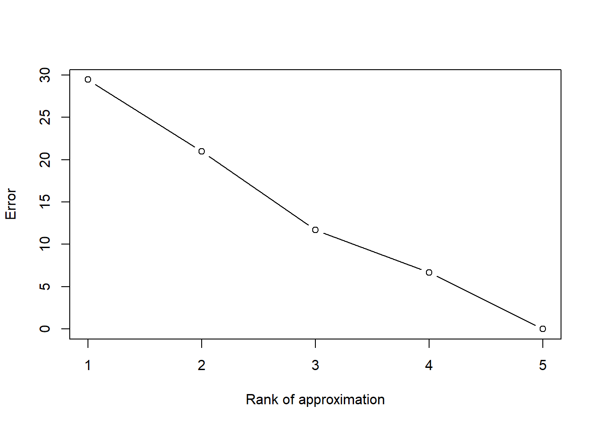
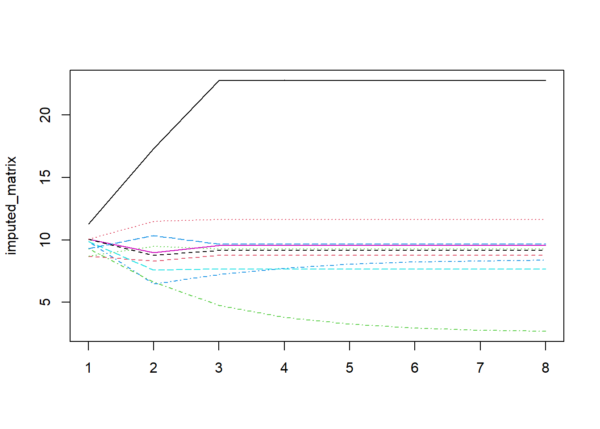

Background
Some twitter threads deserve to be full blown blog posts. A few months back Daniela Witten produced a delightfully informative twitter thread on Singular Value Decomposition while curating the WomeninStat twitter account.
See thread here
As someone who regretfully never paid much attention to my Linear Algebra lessons, this was a good opportunity to dive in and understand the practical and relevant aspects of SVD. I have taken this twitter thread, added some content and code to help bridge some gaps in my understanding.
Introduction
SVD decomposes an \(n \times p\) matrix \(X\) into three matrices, \(U\) (\(n \times p\)), \(V\) (\(p \times p\)) and \(D\) (\(p \times p\))
\[ X = UDV^T \]
Each of these matrices are special
V
This is the right singular matrix
\(V\) is an orthogonal matrix which implies that \(V^T V = I_p\) and \(VV^T = I_p\)
Each row and column of \(V\) is an orthogonal unit vector or orthonormal vector implying that the dot product of any two columns of the matrix is 0 and each column has a unit length i.e given two columns of the matrix \(v_i\) and \(v_j\)
\[ v_i.v_j = 0 \] and
\[ ||v_i||_2 = ||v_j||_2 = 1 \]
Remember that given an n-dimensional vector, \(v = \begin{bmatrix} v_1 \\ v_2 \\ \vdots \\ v_n \end{bmatrix}\)
\[ ||v||_{2} = \sqrt{v_1^2 + v_2^2+...+v_n^2} \]
At the risk of jumping too far ahead, let us verify all the claims made so far
set.seed(0)
X <- matrix(rnorm(50,10,5),ncol=5)
print(paste0("Dimensions of X: ",dim(X)[1],"x",dim(X)[2]))# 10x5## [1] "Dimensions of X: 10x5"UDV_t <- svd(X)
U <- UDV_t$u
print(paste0("Dimensions of U: ",dim(U)[1],"x",dim(U)[2])) #10x5## [1] "Dimensions of U: 10x5"D <- diag(UDV_t$d)
print(paste0("Dimensions of D: ",dim(D)[1],"x",dim(D)[2])) #5x5## [1] "Dimensions of D: 5x5"V <- UDV_t$v
print(paste0("Dimensions of V: ",dim(V)[1],"x",dim(V)[2])) #5x5## [1] "Dimensions of V: 5x5"V## [,1] [,2] [,3] [,4] [,5]
## [1,] -0.5305928 -0.5839346 0.4900540 -0.3674478 -0.04817542
## [2,] -0.3623817 0.2449652 -0.2651247 -0.1078315 -0.85249798
## [3,] -0.4412964 0.3258640 0.4449880 0.7058240 0.05355521
## [4,] -0.4608308 0.5588499 -0.1516082 -0.4858374 0.46507923
## [5,] -0.4243149 -0.4248668 -0.6845120 0.3451506 0.22750709Asserting if V is an orthogonal matrix, whether the dot product of any two columns is 0 and whether each column has a unit length
#V.V^T = I
VdotVt = V %*% t(V)
all.equal(VdotVt,diag(5))## [1] TRUE#V^T.V = I
VtdotV = t(V) %*% V
all.equal(VtdotV,diag(5))## [1] TRUE#Calculate length of the rows and columns
apply(V,1,norm,"2")## [1] 1 1 1 1 1apply(V,2,norm,"2")## [1] 1 1 1 1 1U
This is the left singular matrix.
U## [,1] [,2] [,3] [,4] [,5]
## [1,] -0.4075764 -0.30451400 -0.34042098 0.10207128 -0.555209282
## [2,] -0.2841823 -0.04400465 -0.11911239 0.57696247 0.211675152
## [3,] -0.3024197 -0.19865882 0.30451706 -0.01914373 0.230178929
## [4,] -0.3241650 -0.07720920 0.40096627 0.17648218 -0.427589601
## [5,] -0.3003256 0.19558501 0.17636880 -0.38297623 -0.003307577
## [6,] -0.2596249 0.55588827 -0.05727637 0.11335624 0.326148076
## [7,] -0.2965586 0.58432033 0.15789336 0.12393566 -0.235925477
## [8,] -0.2715670 -0.18391382 -0.36662106 0.26229031 0.367754197
## [9,] -0.3405978 0.06566051 -0.51198359 -0.56492803 0.012115654
## [10,] -0.3482504 -0.36479736 0.40070706 -0.24972577 0.337174733\(U\) is not quite an orthogonal matrix because it is not a square matrix.
dim(U)## [1] 10 5However
\(U^T \times U = I_n\)
all.equal(t(U)%*%U,diag(5))## [1] TRUEBut \(U \times U^T \neq I\)
all.equal(U%*%t(U),diag(10))## [1] "Mean relative difference: 1"Check if rows and columns are unit vectors
apply(U,1,norm,"2")## [1] 0.8327122 0.6888946 0.5263102 0.6969914 0.5533865 0.7063424 0.7247954
## [8] 0.6678498 0.8376968 0.7687466apply(U,2,norm,"2")## [1] 1 1 1 1 1As you can see the columns of U are orthonormal vectors but the rows are not.
D
\(D\) is a diagonal matrix with non-negative and decreasing elements
D## [,1] [,2] [,3] [,4] [,5]
## [1,] 72.6732 0.00000 0.00000 0.000000 0.000000
## [2,] 0.0000 20.69451 0.00000 0.000000 0.000000
## [3,] 0.0000 0.00000 17.38002 0.000000 0.000000
## [4,] 0.0000 0.00000 0.00000 9.614317 0.000000
## [5,] 0.0000 0.00000 0.00000 0.000000 6.687267\[ D_{11} \geq D_{22}... \geq D_{pp} \geq 0 \] The diagonal elements of \(D\) are the the singular values of the matrix
all.equal (X, U%*%D%*%t(V))## [1] TRUEThe decomposition is unique up to sign flips of U & V.
all.equal (X, -U%*%D%*%-t(V))## [1] TRUERelation to PCA
PCA is a dimensionality reduction technique where the goal is to represent a matrix in fewer number of dimensions while preserving as much information as possible.
Let us obtain the principle component loading vectors of X. Each column in the matrix below is a principle component loading vector.
pca <- prcomp(X)
pca$rotation## PC1 PC2 PC3 PC4 PC5
## [1,] -0.70508429 -0.4819910 0.4980523 0.03090714 -0.1467294
## [2,] 0.09849312 0.3072747 0.5821810 -0.65632479 0.3552245
## [3,] 0.21615712 -0.4067371 -0.2131250 -0.65194755 -0.5633677
## [4,] 0.39984007 0.2071265 0.5686941 0.33638878 -0.6005466
## [5,] -0.53531232 0.6818581 -0.2101761 -0.17346325 -0.4174287Note each column above gives the weights to be used for multiplying each row of the original matrix X to get principle component scores.
For example the , principle component scores for the first observation(row) of X when using only the first two principle components is given by
#1x5 x 5x2
t(X[1,]) %*% pca$rotation[,c(1,2)]## PC1 PC2
## [1,] -14.75421 7.410003The above is a 2D representation of the original 5D observation.
Let us obtain the above principal component loading vectors using SVD
- Compute \(\bar{X}\) by centering each column to have mean = 0
n <- nrow(X)
col_means <- colMeans(X)
X_bar <- sweep(X,2,col_means)- Apply SVD to \(\bar{X}\)
svd_X_bar <- svd(X_bar)The principle component loading vectors are given by V
svd_X_bar$v## [,1] [,2] [,3] [,4] [,5]
## [1,] -0.70508429 -0.4819910 0.4980523 0.03090714 -0.1467294
## [2,] 0.09849312 0.3072747 0.5821810 -0.65632479 0.3552245
## [3,] 0.21615712 -0.4067371 -0.2131250 -0.65194755 -0.5633677
## [4,] 0.39984007 0.2071265 0.5686941 0.33638878 -0.6005466
## [5,] -0.53531232 0.6818581 -0.2101761 -0.17346325 -0.4174287The principle component score vectors are given by U upto a scaling factor.
(u <- svd_X_bar$u)## [,1] [,2] [,3] [,4] [,5]
## [1,] -0.40654628 0.34920041 0.25956018 -0.5749824 -0.20816929
## [2,] -0.02935843 0.10830223 -0.55805273 -0.1681078 -0.16348723
## [3,] -0.18548785 -0.31514365 -0.11523416 0.2170557 0.08128469
## [4,] -0.09518384 -0.39695879 0.01766182 -0.3793774 0.50884622
## [5,] 0.17275809 -0.16211678 0.29927195 0.2484149 0.35727053
## [6,] 0.54750382 0.07810152 -0.13824614 0.1144150 -0.34390479
## [7,] 0.53884857 -0.12301901 0.13267006 -0.3368109 -0.11048795
## [8,] -0.15454447 0.34394972 -0.49807958 0.2415545 0.30998781
## [9,] -0.00521322 0.52611956 0.46298986 0.3254301 0.11384933
## [10,] -0.38277639 -0.40843521 0.13745871 0.3124084 -0.54518930The true principle component score vectors are given by
##########10x5 X 5x5
(pc <- (X_bar)%*% svd_X_bar$v)## [,1] [,2] [,3] [,4] [,5]
## [1,] -8.7018408 6.079596 2.7817904 -4.8650796 -0.5439899
## [2,] -0.6283967 1.885547 -5.9808315 -1.4224054 -0.4272263
## [3,] -3.9702386 -5.486666 -1.2350017 1.8365659 0.2124139
## [4,] -2.0373440 -6.911072 0.1892875 -3.2100133 1.3297216
## [5,] 3.6977669 -2.822461 3.2073942 2.1019051 0.9336226
## [6,] 11.7189391 1.359751 -1.4816286 0.9680956 -0.8986952
## [7,] 11.5336795 -2.141767 1.4218680 -2.8498470 -0.2887281
## [8,] -3.3079171 5.988181 -5.3380799 2.0438570 0.8100630
## [9,] -0.1115854 9.159767 4.9620121 2.7535512 0.2975121
## [10,] -8.1930629 -7.110877 1.4731895 2.6433706 -1.4246937The scaling factor for each column is given by
(pc/u)[1,]## [1] 21.404306 17.410048 10.717323 8.461267 2.613209The scaling factors are in fact given by the singular values.
svd_X_bar$d## [1] 21.404306 17.410048 10.717323 8.461267 2.613209This is in fact how PCA is implemented in the prcomp function in R
Relation to Eigen Value Decomposition
Eigen decomposition decomposes a matrix \(X\) as follows
\[ X = P\Sigma P^{-1} \] Alternately
\[ XP = P\Sigma \] where \(P\) is a matrix of eigen vectors and \(\Sigma\)is a diagonal matrix of eigen values.
We have already defined the SVD of X (\(m \times p\)) as shown below
\[ X = UDV^T \] Let the rank of X be given by \(r\)
\[ rank(X) = r \leq min(m,p) \]
\(U\), \(D\) and \(V\) can be expressed as block matrices as shown below
\[ U = \begin{bmatrix} U_1 && U_2 \end{bmatrix} \] where: \(U_1\) is an \(m \times r\) matrix
\(U_2\) is an \(m \times (p-r)\) matrix
\(U_1^TU_1 = I_r\)
\[ D = \begin{bmatrix} D_r & \textbf{0} \\\\ \textbf{0} & \textbf{0} \end{bmatrix} \]
where: \(D_r\) is an \(r \times r\) matrix
\(\textbf{0}\) is an \((p-r) \times (p-r)\) matrix
\[ V^T = \begin{bmatrix} V_1^T && V_2^T \end{bmatrix} \]
where: \(V_1^T\) is an \(r \times p\) matrix
\(V_2\) is an \(r \times (p-r)\) matrix
\(V_1^TV_1 = I_r\)
\[ X = \begin{bmatrix} U_1 && U_2 \end{bmatrix} \begin{bmatrix} D_r & \textbf{0} \\\\ \textbf{0} & \textbf{0} \end{bmatrix} \begin{bmatrix} V_1^T && V_2^T \end{bmatrix} = U_1D_rV_1^T \] This means
\[ XX^T = U_1D_rV_1^T (U_1D_rV_1^T )^T \] \[ = U_1D_rV_1^T V1D_rU_1^T = U_1D_r^2U_1^T \] Multiplying both sides by \(U_1\) gives
\[ (XX^T)U_1 = U_1D_r^2U_1^TU_1 = U_1D_r^2 \] This is the classic definition of the eigen vectors and eigen values of a matrix. \(U_1\) i.e. the left singular matrix gives the eigen vectors while \(D_r^2\) i.e. the square of the singular values gives the eigen values of \(XX^T\)
Similarly, \[ X^TX = (U_1D_rV_1^T )^T U_1D_rV_1^T = V_1D_rU_1^TU_1D_rV_1^T \]
\[ = V_1D_r^2V_1^T \]
Multiplying both sides by \(V_1\) gives
\[ (X^TX)V_1 = V_1D_r^2V_1^TV_1 = V_1D_r^2 \]
Thus, the right singular matrix \(V_1\) gives the eigen vectors for the matrix \(X^TX\),while \(D_r^2\) i.e. the square of the singular values gives the eigen values of \(X^TX\)
Computing SVD :Power Method
Below is the power method, a simple algorithm for computing SVD of a matrix \(A \in \mathbb{R}^{m\times n}\).
It first computes the first singular value \(\sigma_1\) and left and right singular vectors \(u_1\) and \(v_1\) of A, for which:
\(min_{i<j} log(\frac{\sigma_i}{\sigma_j}) \geq \lambda\) where \(\lambda\) is a tunable threshold.
- Generate \(x_0\) such that \(x_0(i) \sim N(0,1)\)
- Determine no of of iterations (\(s\)) required to get \(\epsilon\) precision with probability of at least \(1 -\delta\)
\(s \leftarrow \log\left(4\log\left(\frac{2n}{\delta}\right)/\epsilon\delta\right)/2\lambda\)
Note: I did not find step 2 and 3 to be useful in practice. It gave inaccurate SVD results. In practice, as explained in the video below, your estimate gets better as \(s \to \infty\). In the below implementation, I keep iterating as long as the vector stops changing by more than \(\epsilon\).
- For \(i\) in \([1, \ldots, s]\):
- \(x_i \leftarrow A^T A x_{i-1}\)
- \(x_i \leftarrow \frac{x_i}{\|x_i\|}\)
- \(v_1 \leftarrow x_i\)
- \(\sigma_1 \leftarrow \|A v_1\|\)
- \(u_1 \leftarrow \frac{A v_1}{\sigma_1}\)
- Return (\(\sigma_1, u_1, v_1\))
Given we have computed (\(\sigma_1, u_1, v_1\)), we can repeat the procedure for: \[ A - \sigma_1 u_1 v_1^T = \sum_{i=2}^n \sigma_i u_i v_i^T \] The top singular values and vectors of this will be (\(\sigma_2, u_2, v_2\)).
THis method converges only if the below two assumptions hold.
- \(A^TA\) has an eigen value strictly greater in magnitude than its other eigen values
- The starting vector \(x_0\) has a non-zero component in the direction of an eigen vector associated with the dominant eigen value.
Below is an implementation of the algorithm.
power_svd <- function(A,eps){
#Function to calculate the first singular value
#A: Matrix to be decomposed
#eps: if change between successive iterations is lesser than this threshold value, stop
x <- rnorm(dim(A)[2])
n <- dim(A)[2]
#eps <- 0.01 #precision
#delta <- 0.001 #1 - prob
#lambda <- 2
#s <- ceiling(log(4*log(2*n/delta)/(eps*delta))/(2*lambda))
A_ <- t(A)%*%A
x <- A_%*%x
x_1 <- x <- x/norm(x,type="2")
while (TRUE){
x <- A_%*%x
x_2<- x <- x/norm(x,type="2")
if(max(abs(x_2-x_1))<=eps){break}
x_1 <- x_2
}
v1 <- x
sigma1 <- norm(A%*%v1,type="2")
u1 <- A%*%v1/sigma1
return(list('u'=u1,'sigma'=sigma1,'v'=v1))
}library(Matrix)
SVD_fn <- function(A){
rank <- rankMatrix(A)[1]
udv_list <- list()
for (i in 1:rank){
udv <- power_svd(A,eps=1e-6)
udv_list[[i]] <- udv
A <- A - udv$sigma*udv$u%*%t(udv$v)
}
u <- mapply(cbind,lapply(udv_list,function(x){x$u}))
d <- mapply(c,lapply(udv_list,function(x){x$sigma}))
v <- mapply(cbind,lapply(udv_list,function(x){x$v}))
return(list('u'=u,'d'=d,'v'=v))
}The results of the algorithm are consistent with expectations.
SVD_fn(X)## $u
## [,1] [,2] [,3] [,4] [,5]
## [1,] 0.4075764 0.30451330 -0.34042189 0.10207090 0.555209384
## [2,] 0.2841823 0.04400440 -0.11911259 0.57696253 -0.211674576
## [3,] 0.3024197 0.19865946 0.30451647 -0.01914351 -0.230178948
## [4,] 0.3241650 0.07721004 0.40096602 0.17648211 0.427589777
## [5,] 0.3003256 -0.19558464 0.17636941 -0.38297617 0.003307195
## [6,] 0.2596249 -0.55588839 -0.05727474 0.11335637 -0.326147963
## [7,] 0.2965586 -0.58431999 0.15789507 0.12393560 0.235925601
## [8,] 0.2715670 0.18391306 -0.36662164 0.26229036 -0.367753935
## [9,] 0.3405978 -0.06566158 -0.51198335 -0.56492820 -0.012116219
## [10,] 0.3482504 0.36479820 0.40070600 -0.24972547 -0.337174982
##
## $d
## [1] 72.673196 20.694512 17.380019 9.614317 6.687267
##
## $v
## [,1] [,2] [,3] [,4] [,5]
## [1,] 0.5305928 0.5839358 0.4900526 -0.3674478 0.04817517
## [2,] 0.3623817 -0.2449658 -0.2651241 -0.1078322 0.85249790
## [3,] 0.4412964 -0.3258629 0.4449887 0.7058242 -0.05355472
## [4,] 0.4608308 -0.5588503 -0.1516067 -0.4858371 -0.46507957
## [5,] 0.4243149 0.4248651 -0.6845131 0.3451506 -0.22750685This video provides a good theoretical explanation and intuition about how this method works.
Applications
Matrix Compression or Approximation
If we want to approximate the entire matrix X with just two vectors (a rank 1 approximation), the optimal representation in terms of residual sum of squares is given by the first columns of U and V
\[ X \approx D_{11}U_1V_1^T \]
D[1,1]*U[,1]%*%t(V[,1])## [,1] [,2] [,3] [,4] [,5]
## [1,] 15.71609 10.733703 13.071146 13.649753 12.568156
## [2,] 10.95803 7.484065 9.113846 9.517278 8.763136
## [3,] 11.66126 7.964354 9.698726 10.128049 9.325510
## [4,] 12.49976 8.537027 10.396107 10.856301 9.996055
## [5,] 11.58052 7.909206 9.631568 10.057919 9.260936
## [6,] 10.01110 6.837335 8.326280 8.694850 8.005877
## [7,] 11.43526 7.810000 9.510759 9.931762 9.144776
## [8,] 10.47159 7.151837 8.709269 9.094793 8.374128
## [9,] 13.13341 8.969794 10.923117 11.406639 10.502785
## [10,] 13.42849 9.171327 11.168537 11.662923 10.738761Similarly a representation of the matrix using any number of vectors (1,2..p) can be computed as
\[ X \approx D_{11}U_1V_1^T + D_{22}U_2V_2^T+...+D_{pp}U_pV_p^T \]
The below figure shows how the quality of the compressed representation improves as we use 1,2,…p vectors
quality <- function(X,Y){sqrt(sum((X-Y)^2))}
q <- rep(NA,5)
repr <- matrix(0,10,5)
for (i in 1:5){
repr <- repr + D[i,i]*U[,i]%*%t(V[,i])
q[i] <- quality(X,repr)
}
plot(q,type='b',xlab = "Rank of approximation",ylab="Error")
Impute Missing Values
Assume 1/5 of the values in the matrix are randomly missing.
#Identify random missing elements in the matrix
set.seed(999)
missing<- matrix(sample(c(rep(FALSE,40),rep(TRUE,10))),nr=5)
X_missing <- X
X_missing[missing] <- NA
X_missing## [,1] [,2] [,3] [,4] [,5]
## [1,] 16.314771 13.817967 8.878661 8.821467 18.789515
## [2,] 8.368833 6.004954 NA 7.285559 NA
## [3,] 16.648996 NA 10.666682 NA NA
## [4,] NA 8.552692 14.020948 6.752642 5.839784
## [5,] 12.073207 8.503924 9.714466 NA 4.167147
## [6,] 2.300250 NA NA NA 4.672047
## [7,] 5.357165 11.261117 15.428847 14.960802 2.181090
## [8,] 8.526398 5.540394 6.545231 7.852434 15.782685
## [9,] 9.971164 12.178416 3.577003 16.191521 14.160236
## [10,] 22.023267 3.812308 10.233631 8.603269 8.863357The following algorithm can be used to impute the missing values
Fill in the missing elements with the column mean
Compute SVD to get the rank-K approximation of the filled out matrix (Say K = 3)
Replace missing values with values from rank-K approximation
Go to step 2) until imputed values stop changing
#Calculate column means
X_col_means <- apply(X_missing,2,mean,na.rm=TRUE)
#loop through each column and replace missing values with mean of the column
X_imputed <- X_missing
for (i in c(1:ncol(X_imputed))){
v <- X_imputed[,i]
v[is.na(v)] <- col_means[i]
X_imputed[,i] <- v
}The baseline will be the above matrix where the missing values were replaced by the mean. The quality of this imputation is given by
(baseline <- quality(X[missing],X_imputed[missing]))## [1] 9.958537Compute rank-3 approximation using SVD
svd_X <- svd(X_imputed)
U <- svd_X$u
D <- diag(svd_X$d)
V <- svd_X$v
repr <- matrix(0,10,5)
for (i in 1:3){
repr <- repr + D[i,i]*U[,i]%*%t(V[,i])
}Compare imputed values with original values
X[missing]## [1] 16.362147 4.261715 7.942446 11.886978 12.518040 7.833448 13.633754
## [8] 15.759559 12.803730 7.736080repr[missing]## [1] 12.597238 8.272711 8.969667 8.083139 9.459792 9.914919 9.686136
## [8] 11.014724 7.877740 10.003734The quality of applying one round of SVD is given by:
quality(X[missing],repr[missing])## [1] 11.26842The above algorithm have been wrapped up into a function below.
rank_k_approx <- function (X,k){
#X: matrix to be approximate
#k: rank of approximation
svd_X <- svd(X)
U <- svd_X$u
D <- diag(svd_X$d)
V <- svd_X$v
repr <- matrix(0,nrow(X),ncol(X))
for (i in 1:k){
repr <- repr + D[i,i]*U[,i]%*%t(V[,i])
}
return(repr)
}
impute_with_SVD <- function(X_missing,k){
# X_missing: Matrix with missing values
# k: rank of approximation to be used
#Calculate column means
X_col_means <- apply(X_missing,2,mean,na.rm =TRUE)
#identify missing elements
missing <- is.na(X_missing)
#loop through each column and replace missing values with mean of the column
for (i in c(1:ncol(X))){
v <- X_missing[,i]
v[is.na(v)] <- X_col_means[i]
X_missing[,i] <- v
}
#Center the values on 0
#X_missing <- sweep(X_missing,2,X_col_means)
#Record newly imputed values in a vector
imputed <- X_missing[missing]
j<- 1
#record imputed elements in each iteration
imputed_list <- list()
imputed_list[[j]] <- imputed
while(TRUE){
##Compute rank-k SVD approximation
X_approx <- rank_k_approx(X_missing,k)
#Replace missing values with new approximation
X_missing[missing] <- X_approx[missing]
# break out of loop if imputed values stop changing
if (max(abs(imputed-X_approx[missing])) < 0.001 ) {break}
j <- j + 1
imputed <- X_approx[missing]
imputed_list[[j]] <- imputed
}
return(list(imputed_list,X_missing))
}The missing values are now imputed using a rank 3 approximation
ans <-impute_with_SVD(X_missing,3)The below figure shows how the imputed values change every 100 steps
imputed_matrix <- do.call(rbind,ans[[1]])
index <- c(1,seq(10,nrow(imputed_matrix),by=100),nrow(imputed_matrix))
imputed_matrix <- imputed_matrix[index,]
matplot(imputed_matrix,type='l')
The final imputed values and original values are shown below.
X[missing] #Original values## [1] 16.362147 4.261715 7.942446 11.886978 12.518040 7.833448 13.633754
## [8] 15.759559 12.803730 7.736080ans[[2]][missing]#Imputed values## [1] 22.763462 8.766332 9.275372 8.354845 7.649936 9.544315 9.144079
## [8] 11.624984 2.671137 9.649021The quality of the imputation is given by
quality(X[missing],ans[[2]][missing])## [1] 15.67569Rank-3 approximation was used above and the quality of the imputed values were inferior to using simple column means. Let us also evaluate the quality of imputation when using approximations of rank 1 2 and 4.
First,carry out the imputations with the other rank-approximations.
imputed_list_k <- list()
imputed_list_k[[3]] <- ans
for (i in c(1,2,4)){
imputed_list_k[[i]] <-impute_with_SVD(X_missing,i)
}And evaluate their quality.
library(knitr)
quality_df <- data.frame('Method'=c('Column Means','Rank 1 Approx','Rank 2 Approx','Rank 3 Approx','Rank 4 Approx'),'RMSE' = baseline)
for( i in 1:4){
quality_df[i+1,'RMSE'] <- quality(X[missing],imputed_list_k[[i]][[2]][missing])
}
kable(quality_df)| Method | RMSE |
|---|---|
| Column Means | 9.958537 |
| Rank 1 Approx | 22.739031 |
| Rank 2 Approx | 29.282360 |
| Rank 3 Approx | 15.675690 |
| Rank 4 Approx | 15.632698 |
From the experiments for far, it does not seem SVD is a very good approach for imputing missing values. Replacing missing values with a simple column average seems to be a more effective way to impute missing values.
Also note that if your original data has only positive values, SVD is probably not a good fit as it gives negative values. Non-negative matrix factorization is a better choice in this case.
Check for multi-collinearity
To check for multi-collinearity in an \(m \times p\) matrix (\(p \leq m\)), check the ratio of the first singular value to the last singular value \(\frac{D_{11}}{D_{pp}}\), if this is very large then using least squares regression is a bad idea.
First check this ratio for a random matrix.
svd_X <- svd(X)
svd_X$d[1]/svd_X$d[5]## [1] 10.8674Let us add some multi-collinearity to X by adding a column that is equal to the sum of the first 3 columns and find the same ratio
X2<- cbind(X,X[,1]+X[,2]+X[,3])
svd_X2 <- svd(X2)
svd_X2$d[1]/svd_X2$d[6]## [1] 1.191001e+16Moore-Penrose Pseudo Inverse
The pseudo inverse can be computed by simply using the expression below
\[ X^{-1} \approx D_{11}^{-1}U_1V_1^T + D_{22}^{-1}U_2V_2^T+...+D_{pp}^{-1}U_pV_p^T \]
inverse <- function(X){
# X must be a square matrix to compute the inverse
stopifnot("Matrix must be square"=nrow(X)==ncol(X))
svd_X <- svd(X)
U <- svd_X$u
V <- svd_X$v
D <- svd_X$d
nr <- nc <- nrow(X)
inv <- matrix(0,nr,nc)
for (i in 1:nc){
inv <- inv + 1/D[i]*(U[,i]%*%t(V[,i]))
}
return(inv)
}cov_mat <- cov(X)
round(cov_mat%*%inverse(cov_mat),3)## [,1] [,2] [,3] [,4] [,5]
## [1,] 1 0 0 0 0
## [2,] 0 1 0 0 0
## [3,] 0 0 1 0 0
## [4,] 0 0 0 1 0
## [5,] 0 0 0 0 1Rank of a Matrix
Rank of a matrix is just the number of non-zero singular values.
The rank of X (10 x 5 matrix) used in this blog is
sum(D>0)## [1] 5The rank of X2 (10 x 6) matrix used above is also:
sum(svd_X2$d>0.0001) # using a value slightly greater than 0## [1] 5References and Additional Resources
- https://aaronschlegel.me/principal-component-analysis-r-example.html
- https://www.youtube.com/watch?v=3_45TkPVjpU
- https://www.cs.yale.edu/homes/el327/datamining2013aFiles/07_singular_value_decomposition.pdf
- https://www.youtube.com/playlist?list=PLtmWHNX-gukIc92m1K0P6bIOnZb-mg0hY